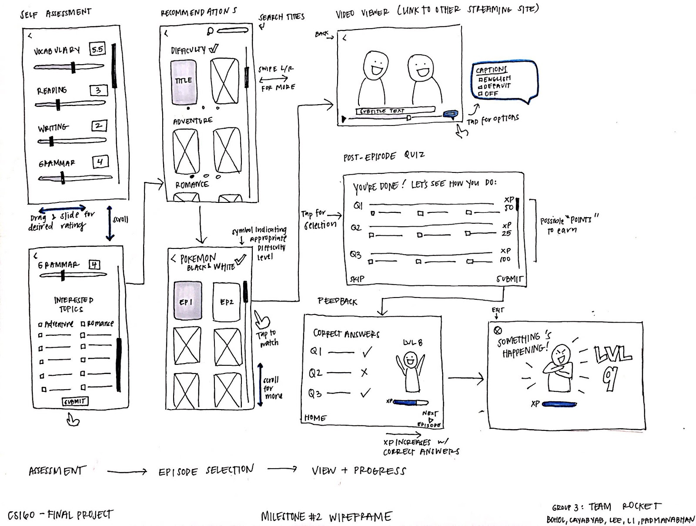
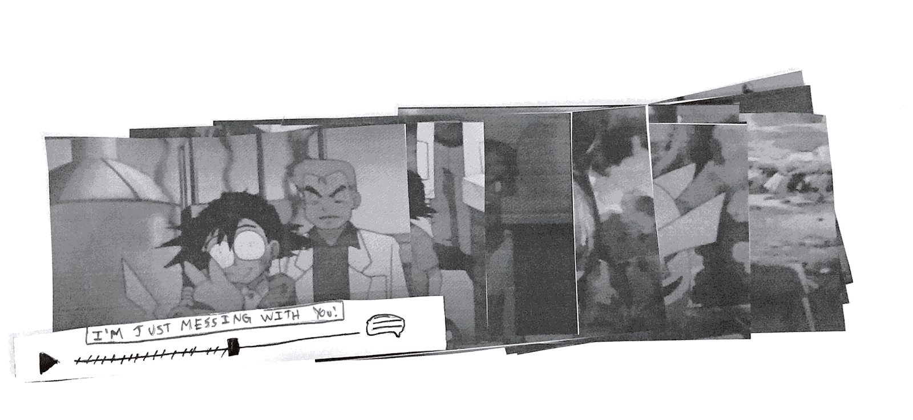

Watch and Learn:
a supplementary language
learning tool for anime lovers
Learn from your favorite anime
Helping anime lovers supplement their language learning journey with their favorite form of entertainment.
This project was done as the final project for User Interface Design and Development (CS 160) at UC Berkeley, summer 2018. The goal was to create an application around the theme of storytelling, or "[engaging] the user in creating, viewing, sharing, or interpreting a story."
Team Rocket (Pokemon, anyone?)
I worked with Marinella Bohol, Christian Cayabyab, Shirley Li, and Sanket Padmanabhan under the name Team Rocket. While all of us were involved in the entire design process from initial user interviews to development together, here are some noteworthy roles and contributions of each individuals:
- Marinella: project manager, initial wireframes, quiz feedback screen
- Christian : cognitive walkthrough, implementation of the initial assessment screen.
- Shirley: logo, overall visual design, mockup
- Sanket: Tensorflow machine learning, Django
- Helen (me!): persona, implementation of popup interaction with YouTube API, CSS
Brainstorming
We began by brainstorming to explore how we might involve storytelling in our solution, encouraging quantity of ideas regardless of how wild or crazy it might sound. We then used affinity mapping to group ideas, which helped us discover themes such as learning, creativity support tools, film, stars (astrology), and scrapbooking to name a few. After voting among ourselves, we decided to pursue the idea of developing a language learning tool based on an archive of stories shared by users in different languages with varying difficulty.

Users
Through document analysis and initial interviews with people who have been learning a language, we found that they enjoy learning by consuming content (e.g. watching television or movies). We saw a potential area for storytelling in the interviewees’ desire to communicate with and understand the stories of people around them. From these insights, we settled on using anime to deliver materials for language learners because it is a form of media that has storylines and characters that viewers can invest in. We further narrowed down our user group into people who already have a primary means of learning a language or are already at a basic proficiency since we needed to balance the anime watching experience with the amount of material that can be presented to a user during their viewing.
Persona

Name: Jessica
Age: 27
Occupation: Physical Therapist
- To be able to communicate with more of her patients
- To travel to Japan next year
Pains: Paola works at a hospital in Oakland, where she treats many patients who speak Japanese and limited English. She learned Japanese in high school and wants to brush up on it and improve her Japanese because she wants to connect with her patients on a more personal level, but she doesn’t have time and money to spend on private lessons or formal classes. Being an avid Netflix watcher and podcast listener, she wishes learning Japanese could be just as fun and engaging.
After targeting anime watcher, we thought it makes the most sense to have the app teach Japanese. However, none of us spoke the language; so we decided to use English because it would be easier for us to design a curriculum and easier to find and work with dataset for machine learning.
Wireframes
Wizard of Oz Evaluation
Conducting wizard of Oz evaluations with our classmates revealed that users want to see a variety of questions (e.g. vocabulary, plot, grammar). We also explored whether users would like to see quick tips while watching anime, and the general consensus was that they would like to have the option to view it or not - so we added a little pop-up at the top of the playback screen that can be tapped to view quick tips about words and phrases involved at the current playback time. Some users suggested we have a list of words to look out for before watching an episode, so we decided to incorporate a pre-episode vocabulary list detailing what the pop-ups would show throughout the episode.
Visual Identity
We chose an orange color scheme because it captures the bright and energetic concept of anime. Light orange is used for UI elements, the middle orange for the logo, and the darker orange for user avatar.
The avatar will change every time the user levels up (i.e. collects a certain amount of experience through quizzes), becoming more expressive and scholarly. Having an avatar that changes according to the user progress embeds a story in their pursuit of fluency.
Implementation
We implemented the web application in HTML, CSS, JavaScript and Django.Final Prototype
Takeaways
Don't be too quick to dismiss any ideas in the early phases.
Strangers are more willing to help than you think.